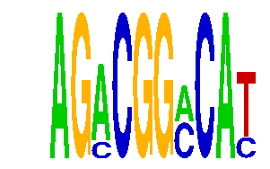

family_4 |
|---|
|  |
| Download PWM |
| Download instances (motifs) |
| Show motif distribution |
Query_ID | Query_Consensus | Subject_Name | Source_DB | Subject_ID | Length | Orientation | Offset | Divergence | Overlap | Subject_Consensus |
|---|
Sequence | Start_position (from start) | Start_position (from end) | Average conservation | Best conservation score | Instance_with_best_CS | Best_Z-score | Instance_with_best_ZS | Strand |
|---|---|---|---|---|---|---|---|---|
| chr13:69636500-69638300 | 513 | 523 | 0.1651 | 0.297 | AGACGGMCAY | 15.282277 | AGACGGMCAY | 1 |
| chr9:86331830-86333685 | 309 | 319 | 0.1489 | 0.743 | AGACGGMCAY | 15.282277 | AGACGGMCAY | 1 |
| chr1:136739000-136740700 | 47 | 57 | 0.0004 | 0.001 | AGACGGMCAY | 20.7197 | AGMCGGMCAT | 1 |
| chr17:75897424-75898700 | 917 | 927 | 0.0021 | 0.02 | AGACGGMCAY | 20.7197 | AGMCGGMCAT | 1 |
| chr13:74499900-74502000 | 789 | 799 | 0.5907 | 0.994 | AGMCGGMCAT | 20.7197 | AGMCGGMCAT | 1 |
| chr3:119497469-119498469 | 203 | 213 | 0.0003 | 0.001 | AGACGGMCAY | 20.7197 | AGMCGGMCAT | 1 |
| chr4:133873200-133876300 | 438 | 448 | 0.0021 | 0.004 | AGMCGGMCAT | 15.282277 | AGACGGMCAY | 1 |
| chr18:54962500-54963670 | 309 | 319 | 0.0153 | 0.028 | AGACGGMCAY | 15.282277 | AGACGGMCAY | 1 |
| chr2:35038114-35039114 | 132 | 142 | 0.007 | 0.053 | AGACGGMCAY | 15.282277 | AGACGGMCAY | 1 |
| chr10:6213100-6214278 | 1018 | 1028 | 0.0003 | 0.002 | AGMCGGMCAT | 20.7197 | AGMCGGMCAT | -1 |
| chr1:191783500-191786100 | 1422 | 1432 | 0.0014 | 0.003 | AGMCGGMCAT | 15.282277 | AGACGGMCAY | -1 |
| chr9:114932900-114934400 | 1332 | 1342 | 0.0264 | 0.029 | AGMCGGMCAT | 20.7197 | AGMCGGMCAT | 1 |
| chr14:102221400-102222887 | 6 | 16 | 0.1033 | 0.168 | AGMCGGMCAT | 15.282277 | AGACGGMCAY | 1 |
| chr13:24616498-24618400 | 1672 | 1682 | 0.0165 | 0.033 | AGMCGGMCAT | 15.282277 | AGACGGMCAY | 1 |
| chr1:186871100-186872600 | 1155 | 1165 | 0 | 0 | AGMCGGMCAT | 15.282277 | AGACGGMCAY | 1 |
| chr1:140866383-140867383 | 556 | 566 | 0.0197 | 0.14 | AGMCGGMCAT | 15.282277 | AGACGGMCAY | 1 |